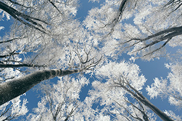
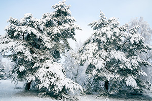

Winter is a challenging season for trees, as both deciduous and evergreen varieties face unique threats during the colder months. Understanding these seasonal challenges can help homeowners take proactive steps to maintain tree health and safety. This knowledge is not only crucial for tree health but also for preventing potential hazards like falling branches or weakened structures. If you’re in need of professional guidance, Smithville tree companies can provide expert winter care for your trees.
Winter Challenges for Deciduous Trees

Deciduous trees are known for shedding their leaves in the fall, but their vulnerability doesn’t end there. Winter brings many challenges. Deciduous trees enter a dormant state during winter, conserving energy by shedding leaves. This process helps reduce water loss, making it easier for the tree to survive the season. While dormancy is beneficial, it also signals the need for extra protection, as the absence of leaves leaves branches exposed to the cold. Additionally, winter’s cold temperatures can lead to frost cracks. These are vertical splits in the trunk caused by sudden temperature drops. Furthermore, heavy snow and ice accumulation on branches can cause them to break. Root systems may also suffer damage from frozen ground, which restricts the tree’s ability to absorb water and nutrients. Smithville tree companies often advise pruning weak or dead branches in fall to prevent potential winter hazards.
Winter Challenges for Evergreen Trees
Evergreens 
Smithville Tree Companies Care Tips for Winter
Taking proactive steps can help maintain the health of both deciduous and evergreen trees during winter. First, apply a thick layer of mulch around the base of trees, but not encroaching on the trunk, to insulate roots from freezing temperatures. Mulch also retains moisture, which is vital during dry winter spells. Secondly, watering is important. Water trees deeply before the ground freezes, as this provides a reserve of moisture. In mild winters, periodic watering on warmer days can prevent dehydration. Lastly, contact us to schedule pruning. Removing weak, dead, or diseased branches before winter minimizes the risk of breakage. Proper pruning improves tree structure and reduces stress.
When to Call a Tree Professional
Despite best efforts, some winter tree issues require professional intervention. Contact Smithville tree companies like Ben Bivins Tree Experts if you notice any of the following:
- Broken or hanging branches: These pose a safety risk and should be addressed promptly.
- Signs of pest infestation: Insects like bark beetles may seek shelter in trees during winter.
- Visible cracks in the trunk: Frost cracks can worsen without proper treatment.
- Professional tree services can perform assessments, handle pruning, and offer guidance on tree health throughout the season.
Prepare Your Trees for Winter’s Challenges
Winter’s harsh conditions demand extra care for both deciduous and evergreen trees. By understanding the unique challenges posed by the cold season and taking the right steps to protect your trees, you can ensure they stay healthy and vibrant. If you’re unsure how to winterize your trees or need expert help, Smithville tree companies offer a range of services to keep your trees safe and sound. Don’t wait until it’s too late—prepare your trees now for a safer winter.